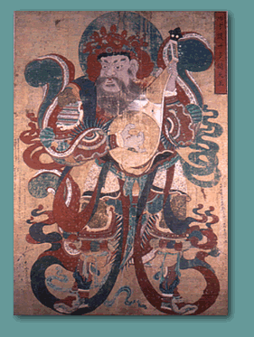

Guardian King painting
Choson dynasty c. 1796-1820
|
|||||||
|
|||||||
|  | |||||||
| These
Banners or taenghwa were painted by artisans in bold mineral colours on
hemp, for use in ceremonies and rituals. These paintings represent two of
the four Guardian Kings who protect the Four Quarters of Heaven and the
State, and traditionally stand guard at the entrance to Buddhist temples. Guardian King painting Choson dynasty c. 1796-1820 |
|||||||